charts/, every number is read from data/*.json, and every input file is listed with its hash at the end. Code: research/python/research-round-2/ (run in this order: p4_volsize, p5_trend, p7_drawdown, p10_breadth, calm_today, build_round2_page). Tests: tests/research-round-2-20260928.test.mjs. No key, database, price table or paid model was used. The only network read was the chart API's public daily bars for VIX, SPY and QQQ.STOLEN FROM
Research director Study A (N3): two-state hidden Markov model · hmmlearn · Kritzman, Page & Turkington (2012), Regime shifts, FAJ
2026-09-28: probability of STRESS 0.001 (CALM 0.999), from the S&P 500 and VIX to the 25 Sep close, then 2026-09-28 from the chart API (SPY's return standing in for the index; today's 16:00 close read from the API's last 30-minute bar, because the daily bar is published overnight). Model parameters were fixed in 2007 and never refitted; each day's number uses only bars up to that day.
What CALM means here. The model's calm state has a typical VIX of 13.9 and swings about 10.4% a year. The stressed state has a VIX near 23.7 and swings about 20.6% a year. A calm spell lasts about 165 sessions on average. From today's reading, the chance of still being CALM is 97% in 5 sessions, 89% in 20, 74% in 60.
What it says, and what it does not. Measured from 2008 onward with the frozen model, the state reliably tells you how wild the next month will be: STRESS days were followed by +9.7 points more yearly volatility than CALM days (90% range +7.3 to +12.4, p = 0.000), which is luck-proof. It does not reliably tell you the direction. The next-20-day return difference, STRESS minus CALM, was +0.43 points (range -0.42 to +1.22), and that range includes zero.
For sizing, in one line: in CALM, the volatility-managed rule of section 2 holds a full position. On today's numbers it would hold SPY 100%, QQQ 100%, LEADERS10 100%. Recent swings are ordinary, at the 41st, 50th, 41st percentile of their own history. The rule only starts cutting when last month's swings run above usual.
The caution CALM does not see: breadth is thin. At the 25 Sep close only 26.4% of S&P 500 members were above their 50-day average (the 11th percentile since 2004), and 46.1% were above their 200-day, while the index itself sits +7.5% above its own 200-day. That is a calm, narrow tape carried by the leaders. None of this round's breadth rules makes it a signal (section 5), but it is the reason not to read CALM as "everything is fine".
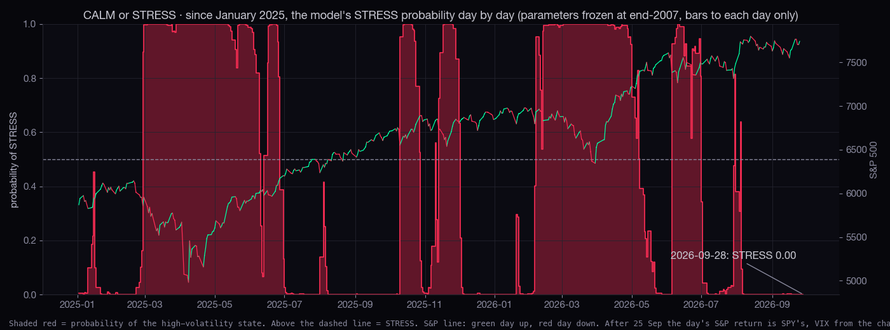
| state | share of days | spell length: median · 90th pct (sessions) | next-20 swings (yearly) | next-20 median return | next-20 worst 10% | next-20 up |
|---|---|---|---|---|---|---|
| CALM | 52.6% | 22 · 104 | 10.6% | +1.13% | -3.38% | 65.2% |
| STRESS | 47.4% | 12 · 83 | 18.1% | +2.08% | -6.47% | 66.2% |
Inside each 200-day side (out of sample): above the 200-day and CALM, the next 20 sessions' median was 1.12% with yearly swings of 10.6%. Below the 200-day and STRESS, the median was 1.73% with swings of 23.9%. The biggest difference is in the swings, not the returns.
| as of | last 20 days' swings (yearly) | its usual | own percentile | weight the rule holds | |
|---|---|---|---|---|---|
| SPY | 2026-09-28 | 11.1% | 12.6% | 41st | 100% |
| QQQ | 2026-09-28 | 16.1% | 16.2% | 50th | 100% |
| LEADERS10 (point-in-time top 10) | 2026-09-25 | 13.0% | 14.4% | 41st | 100% |
Check: the model was re-fitted here with the published code and seeds, and it reproduces the research director's 25 Sep reading (1.000 CALM against a published 1.000; match = true). Only then were the newer sessions fed through it.
STOLEN FROM
Moreira & Muir (2017), Volatility-Managed Portfolios, J. Finance (NBER w22208) · Harvey, Hoyle, Korgaonkar, Rattray, Sargaison & van Hemert (2018), The impact of volatility targeting · Hansen (2005), SPA test; arch implementation
The question. What happens to returns, the worst falls and trading costs if each position is sized by how wild its last 20 sessions were compared with its own usual level, never above 100%?
The rule, exactly. At each close: weight = usual swings ÷ last 20 days' swings, capped at 100%. "Usual" is the median of every earlier reading, so nothing is known in advance. The weight earns the next day's return, cash earns nothing, and trading costs 5 bps per 100% of the position traded. Moreira and Muir's own version (last month's variance, reset monthly) is shown next to it. We searched [10, 20, 60] windows × volatility or variance × 100%/150% caps × daily/monthly resets, plus the VIX in place of recent swings: 28 rules per instrument, 364 in all, and all of them are counted.
How many: SPY 2005→2026, the S&P 500 index since 1929, the Nasdaq-100 since 1985, QQQ since 2011 and the point-in-time top-10 leaders since 2007: five records, with dozens of volatile spells in each. How big: SPY's worst fall went from -56% to -29%, and its return from 8.9% to 7.8% a year. How sure: the Sharpe ratio (return per unit of risk) improved in all five, but the 90% range stays clear of zero only for the Nasdaq-100 and the leaders. Once the 28-rule search is counted, no rule beats "hold the same average amount all the time" (smallest SPA p = 0.69). Levered after the fact to match buy-and-hold's swings, which is Moreira and Muir's own comparison, the best single market scores p = 0.07 (the Nasdaq-100); counted over the five markets, that is 0.34, which is not beyond luck. On the S&P since 1929 the cut was smaller: -86% to -74%.
In plain words: this is a way to survive the bad years (2008, 2020, 2022), not a way to beat the market. It works because big falls come with big swings, and the rule is already smaller when they arrive. It gives up return in calm, rising years because it trims whenever swings pick up, even when prices keep rising. It trades about 3 times the position a year; at 20 bps a trade, SPY's return drops to 7.2%. Walk-forward check: the rule picked on SPY's first half (inv-var W20 cap1.0 monthly) had a second-half Sharpe of 0.83, against 0.77 for holding.
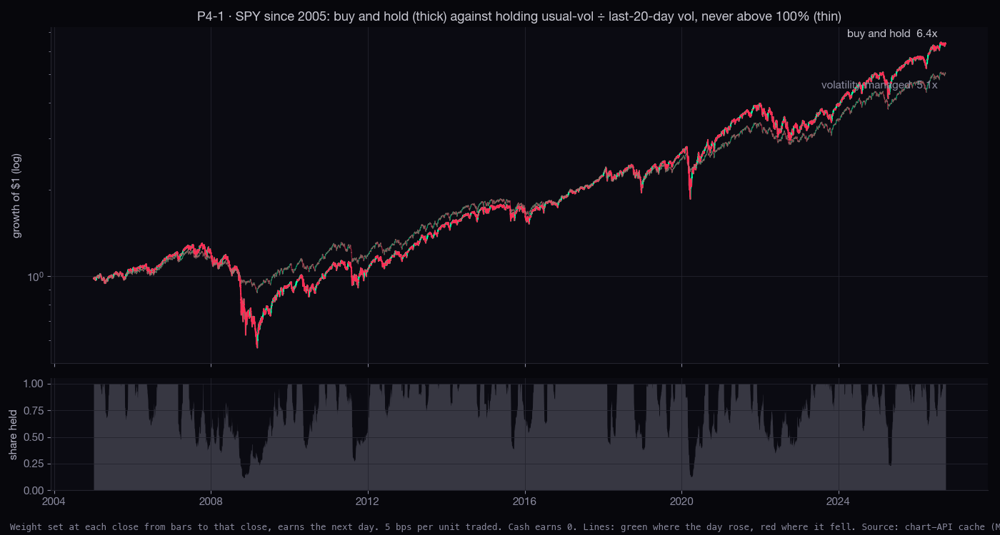
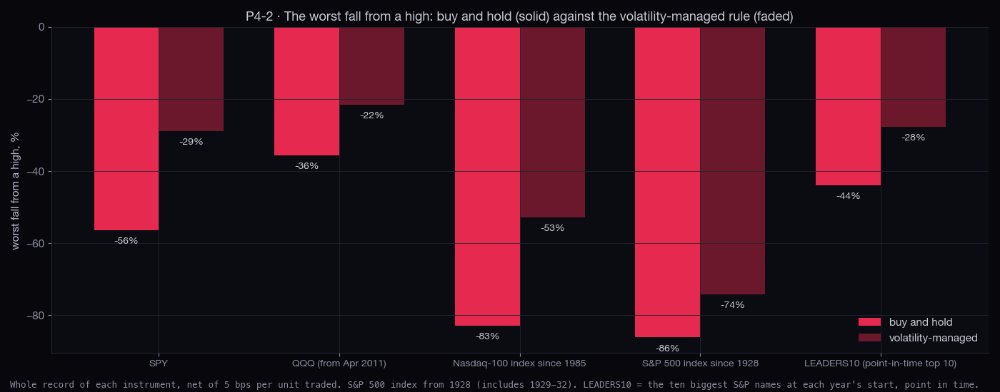
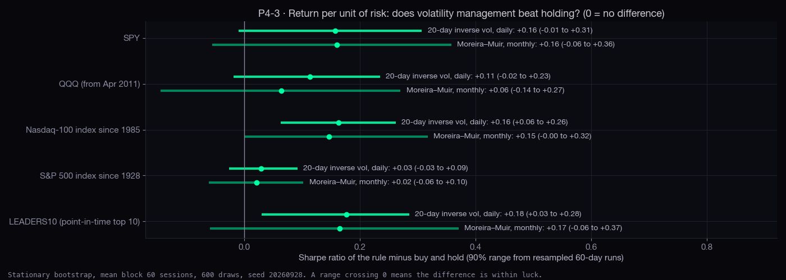
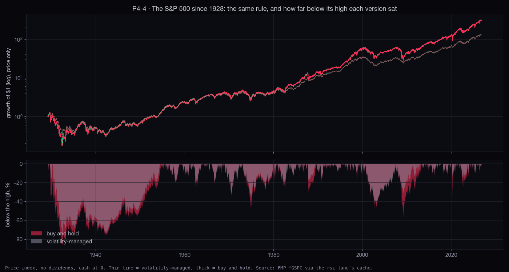
| instrument | from | buy and hold | vol-managed (20 day) | Moreira–Muir (monthly) | Sharpe | Sharpe gain (90% range) | avg held | turnover · cost a year | return at 20 bps | SPA p: same exposure · vol-matched |
|---|---|---|---|---|---|---|---|---|---|---|
| SPY | 2005 | 8.9% · -56% | 7.8% · -29% | 7.2% · -17% | 0.55 → 0.70 | +0.16 (-0.01 to +0.31) | 82% | 3.3 · 16 bps | 7.2% | 0.72 · 0.23 |
| QQQ (from Apr 2011) | 2012 | 18.8% · -36% | 15.0% · -22% | 13.2% · -16% | 0.94 → 1.05 | +0.11 (-0.02 to +0.23) | 83% | 3.6 · 18 bps | 14.4% | 0.89 · 0.45 |
| Nasdaq-100 index since 1985 | 1986 | 14.0% · -83% | 12.7% · -53% | 11.2% · -30% | 0.63 → 0.80 | +0.16 (+0.06 to +0.26) | 82% | 3.5 · 18 bps | 12.1% | 0.69 · 0.07 |
| S&P 500 index since 1928 | 1929 | 6.1% · -86% | 5.2% · -74% | 4.7% · -76% | 0.41 → 0.44 | +0.03 (-0.03 to +0.09) | 88% | 2.7 · 14 bps | 4.7% | 0.88 · 0.46 |
| LEADERS10 (point-in-time top 10) | 2008 | 12.3% · -44% | 10.9% · -28% | 9.8% · -20% | 0.66 → 0.83 | +0.18 (+0.03 to +0.28) | 83% | 3.2 · 16 bps | 10.3% | 0.74 · 0.12 |
| SPY | QQQ (from 2011) | LEADERS10 | |
|---|---|---|---|
| 2008 crisis | -56% → -28% | — | -44% → -28% |
| 2020 Covid | -34% → -13% | -29% → -13% | -27% → -12% |
| 2022 bear | -25% → -16% | -35% → -20% | -36% → -20% |
| 2025 tariff fall | -19% → -13% | -23% → -17% | -24% → -14% |
These are chosen because they are today's winners, so they can only look good looking back. They are shown for the numbers, not as evidence.
| from | worst fall: held → managed | Sharpe gain (90% range) | weight today | |
|---|---|---|---|---|
| NVDA | 2006 | -85% → -71% | +0.08 (-0.02 to +0.17) | 100% |
| AAPL | 2006 | -61% → -48% | +0.13 (+0.04 to +0.21) | 100% |
| GOOGL | 2015 | -44% → -33% | +0.10 (-0.02 to +0.20) | 88% |
| MSFT | 2006 | -59% → -30% | +0.12 (+0.00 to +0.23) | 85% |
| AMZN | 2006 | -65% → -45% | +0.07 (-0.02 to +0.16) | 100% |
| META | 2023 | -34% → -29% | +0.01 (-0.15 to +0.14) | 66% |
| AVGO | 2010 | -49% → -33% | +0.00 (-0.07 to +0.07) | 100% |
| TSLA | 2011 | -74% → -63% | -0.10 (-0.19 to -0.01) | 100% |
STOLEN FROM
Faber (2007), A Quantitative Approach to Tactical Asset Allocation · Hurst, Ooi & Pedersen (2017), A Century of Evidence on Trend-Following Investing (AQR) · Moskowitz, Ooi & Pedersen (2012), Time Series Momentum, JFE
The question. Is "deep below the 200-day is a problem" the same fact the trend-following literature reports? Does stepping aside below the long average cut the worst falls, and what does it cost, across indexes, sector funds, commodities, bitcoin, semis and the leaders, not only SPY?
The rules. Hold when the close is above its 50/100/150/200/250-day average, or the 200-day with a 2% band. Faber's version holds for the next month when the month-end close is above its 6/8/10/12-month average. Otherwise cash at 0 (no bill yield is counted, which understates the rule by the bill rate times the time spent out). Each switch costs 10 bps. That is 10 rules × 34 instruments = 340 tests, all counted.
How many: 26 instruments in the evidence set (today's hand-picked leaders are left out and shown separately, marked *), with the S&P back to 1928. How big: Faber's 10-month rule cut the worst fall by a median 23 points (90% range 18 to 29, resampling whole instruments) and gave up 2.2 points of return a year (range -3.0 to -0.9). The daily 200-day rule cut 23 points and cost 3.6 a year, because it switches more often and gets whipsawed more. How sure: the drawdown cut shows up in both halves of the S&P record and in nearly every market. Beating holding does not: 0 of 26 instruments pass the SPA test against buy-and-hold (smallest p 0.53). Against "the same share of days held at random", 2 pass at 10%, which is about what luck gives (2.6).
In plain words: the published claim holds on our data. Stepping aside below the long average roughly halves the deep holes, at the cost of about two points a year and many small losing round trips. On SPY the 10-month rule sat out 12% of the up months, and 6 of its 17 round trips lost money. That is the price. The S&P's two halves differ: before 1977 the rule also beat holding, and since 1977 it has only cut the holes. This matches Faber, who counts bill interest while out; we do not. Today 12 of 34 instruments are below their 200-day: XLY discretionary, XLP staples, XLB materials, XLI industrials, XLU utilities, XLRE real estate, XLC communication, Gold since 1975, Silver since 1970, TLT long bonds, AVGO, TSLA.
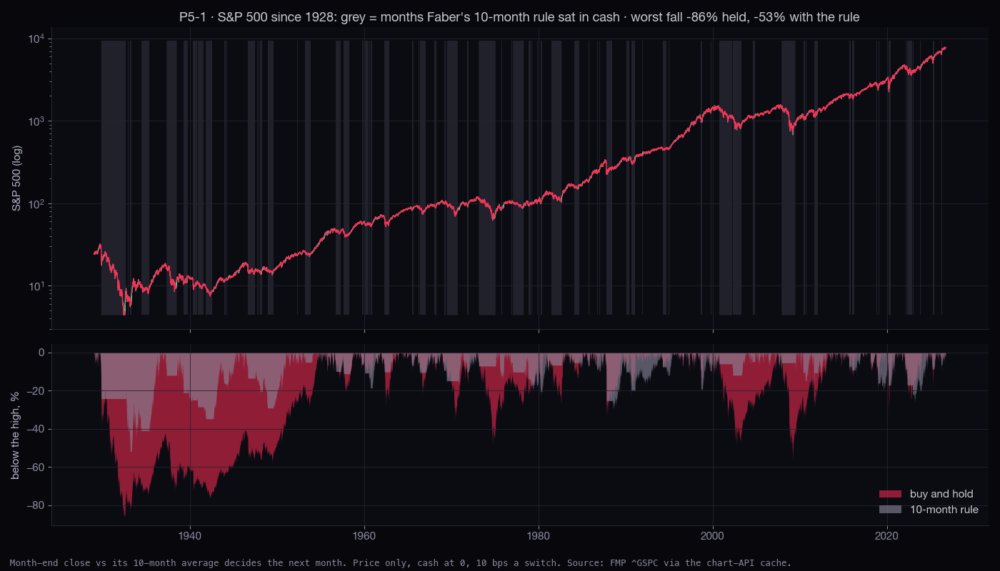
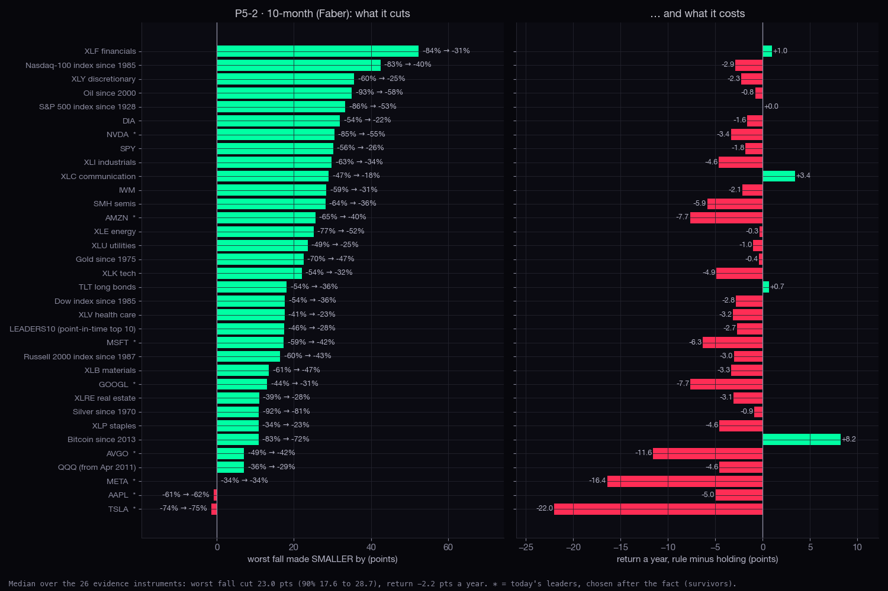
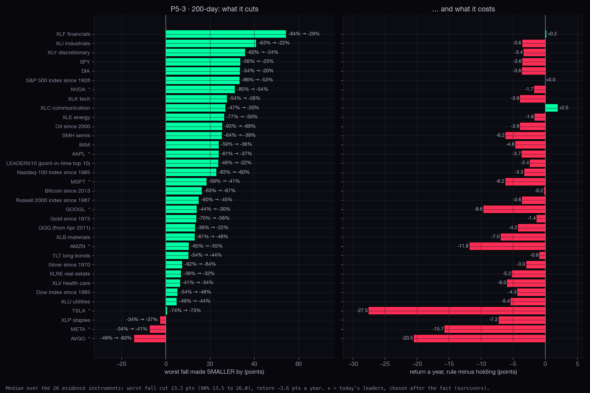
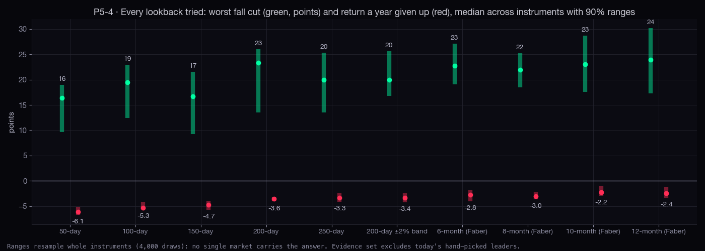
| holding | 10-month rule | 200-day rule | |
|---|---|---|---|
| 1928-1976 | 3.2% · -86% | 5.4% · -53% | 5.6% · -53% |
| 1977-2026 | 9.0% · -57% | 6.9% · -33% | 6.6% · -31% |
| rule | median worst-fall cut (pts) | 90% range | instruments cut | median return a year given up | 90% range | instruments where it beat holding |
|---|---|---|---|---|---|---|
| 50-day | 16.35 | 9.6 to 19.0 | 88% | -6.1 | -6.7 to -5.1 | 4% |
| 100-day | 19.48 | 12.4 to 22.9 | 81% | -5.3 | -5.6 to -4.1 | 4% |
| 150-day | 16.71 | 9.3 to 21.5 | 96% | -4.7 | -5.7 to -4.0 | 4% |
| 200-day | 23.3 | 13.5 to 26.0 | 96% | -3.6 | -4.1 to -3.1 | 8% |
| 250-day | 20.01 | 13.5 to 25.4 | 96% | -3.3 | -4.2 to -2.5 | 8% |
| 200-day ±2% band | 19.99 | 16.8 to 25.6 | 96% | -3.4 | -4.2 to -2.5 | 19% |
| 6-month (Faber) | 22.76 | 19.1 to 27.1 | 100% | -2.8 | -4.1 to -1.7 | 12% |
| 8-month (Faber) | 21.94 | 18.5 to 25.2 | 100% | -3.0 | -3.6 to -2.3 | 12% |
| 10-month (Faber) | 23.02 | 17.6 to 28.7 | 100% | -2.2 | -3.0 to -0.9 | 19% |
| 12-month (Faber) | 23.91 | 17.3 to 30.1 | 96% | -2.4 | -3.4 to -1.3 | 19% |
| instrument | from | held | 10-month | 200-day | time in (10-mo) | switches a year (10-mo · 200d) | round trips lost (10-mo · 200d) | SPA p: vs holding · vs same share |
|---|---|---|---|---|---|---|---|---|
| S&P 500 index since 1928 | 1928 | -86% | -53% (+0.0) | -53% (+0.0) | 68% | 1.5 · 6.0 | 32/73 · 218/294 | 0.90 · 0.15 |
| Nasdaq-100 index since 1985 | 1986 | -83% | -40% (-2.9) | -60% (-3.3) | 74% | 1.7 · 6.8 | 14/34 · 105/138 | 0.99 · 0.80 |
| Russell 2000 index since 1987 | 1988 | -60% | -43% (-3.0) | -45% (-3.6) | 70% | 2.0 · 7.9 | 21/38 · 117/151 | 0.99 · 0.86 |
| Dow index since 1985 | 1986 | -54% | -36% (-2.8) | -48% (-4.3) | 76% | 1.9 · 8.5 | 20/38 · 134/172 | 0.53 · 0.93 |
| SPY | 2004 | -56% | -26% (-1.8) | -23% (-3.6) | 80% | 1.6 · 6.7 | 6/17 · 54/74 | 0.95 · 0.72 |
| QQQ (from Apr 2011) | 2012 | -36% | -29% (-4.6) | -22% (-4.2) | 83% | 1.7 · 4.4 | 5/12 · 24/32 | 0.98 · 0.93 |
| IWM | 2004 | -59% | -31% (-2.1) | -36% (-4.6) | 71% | 1.9 · 8.5 | 11/21 · 74/93 | 0.95 · 0.91 |
| DIA | 2004 | -54% | -22% (-1.6) | -20% (-3.6) | 77% | 1.7 · 7.8 | 9/18 · 66/86 | 0.95 · 0.78 |
| XLK tech | 2004 | -54% | -32% (-4.9) | -26% (-3.9) | 78% | 1.9 · 6.2 | 10/20 · 50/68 | 0.99 · 0.95 |
| XLF financials | 2004 | -84% | -31% (+1.0) | -29% (+0.2) | 66% | 1.7 · 7.4 | 12/19 · 63/81 | 0.70 · 0.47 |
| XLV health care | 2004 | -41% | -23% (-3.2) | -34% (-6.0) | 69% | 2.0 · 10.0 | 12/22 · 94/110 | 0.61 · 0.91 |
| XLY discretionary | 2004 | -60% | -25% (-2.3) | -24% (-3.4) | 75% | 2.0 · 8.0 | 12/22 · 68/88 | 0.94 · 0.77 |
| XLP staples | 2004 | -34% | -23% (-4.6) | -37% (-7.3) | 74% | 2.4 · 11.6 | 13/26 · 107/128 | 0.53 · 0.96 |
| XLB materials | 2004 | -61% | -47% (-3.3) | -48% (-7.0) | 68% | 2.3 · 10.8 | 16/25 · 101/119 | 0.95 · 0.85 |
| XLI industrials | 2004 | -63% | -34% (-4.6) | -22% (-3.6) | 74% | 2.1 · 8.5 | 13/23 · 75/94 | 0.96 · 0.91 |
| XLE energy | 2004 | -77% | -52% (-0.3) | -50% (-1.6) | 64% | 1.6 · 8.1 | 10/18 · 70/89 | 0.77 · 0.32 |
| XLU utilities | 2004 | -49% | -25% (-1.0) | -44% (-5.4) | 71% | 1.6 · 9.9 | 9/18 · 86/109 | 0.92 · 0.70 |
| XLRE real estate | 2016 | -39% | -28% (-3.1) | -32% (-5.2) | 58% | 2.8 · 12.9 | 9/14 · 56/64 | 0.96 · 0.94 |
| XLC communication | 2019 | -47% | -18% (+3.4) | -20% (+2.0) | 75% | 1.0 · 3.9 | 1/4 · 10/14 | 0.58 · 0.21 |
| Gold since 1975 | 1976 | -70% | -47% (-0.4) | -56% (-1.4) | 59% | 1.6 · 7.8 | 27/40 · 172/200 | 0.82 · 0.04 |
| Silver since 1970 | 1971 | -92% | -81% (-0.9) | -84% (-3.0) | 51% | 2.1 · 9.8 | 41/58 · 243/274 | 0.96 · 0.31 |
| Oil since 2000 | 2001 | -93% | -58% (-0.8) | -68% (-3.9) | 59% | 2.3 · 10.0 | 18/28 · 107/126 | 0.96 · 0.82 |
| Bitcoin since 2013 | 2014 | -83% | -72% (+8.2) | -67% (-0.2) | 65% | 1.4 · 6.5 | 5/9 · 32/43 | 0.73 · 0.02 |
| TLT long bonds | 2004 | -54% | -36% (+0.7) | -44% (-0.9) | 48% | 2.0 · 10.0 | 13/23 · 96/111 | 0.54 · 0.41 |
| SMH semis | 2004 | -64% | -36% (-5.9) | -39% (-6.2) | 70% | 1.9 · 8.2 | 13/21 · 74/90 | 0.98 · 0.68 |
| LEADERS10 (point-in-time top 10) | 2008 | -46% | -28% (-2.7) | -22% (-2.4) | 75% | 1.7 · 6.0 | 7/15 · 41/56 | 0.92 · 0.50 |
| NVDA * | 2004 | -85% | -55% (-3.4) | -54% (-1.7) | 73% | 1.1 · 4.1 | 3/12 · 29/45 | 0.93 · 0.18 |
| AAPL * | 2004 | -61% | -62% (-5.0) | -37% (-3.7) | 78% | 1.3 · 3.8 | 6/14 · 23/42 | 0.97 · 0.54 |
| GOOGL * | 2015 | -44% | -31% (-7.7) | -30% (-9.6) | 78% | 1.7 · 8.3 | 5/9 · 36/47 | 0.99 · 0.95 |
| MSFT * | 2004 | -59% | -42% (-6.3) | -41% (-6.2) | 69% | 1.9 · 6.9 | 14/21 · 61/76 | 0.66 · 0.94 |
| AMZN * | 2004 | -65% | -40% (-7.7) | -55% (-11.8) | 71% | 1.5 · 7.4 | 7/16 · 66/81 | 0.55 · 0.83 |
| META * | 2023 | -34% | -34% (-16.4) | -41% (-15.7) | 73% | 1.5 · 4.9 | 1/3 · 6/8 | 0.98 · 0.88 |
| AVGO * | 2010 | -49% | -42% (-11.6) | -63% (-20.5) | 83% | 2.0 · 10.5 | 10/17 · 72/85 | 0.59 · 0.96 |
| TSLA * | 2011 | -74% | -75% (-22.0) | -73% (-27.5) | 62% | 2.6 · 11.0 | 14/20 · 71/84 | 0.67 · 0.79 |
* today's leaders, chosen after the fact. QQQ starts in April 2011 because every cached copy is missing December 2004 to March 2011, when the fund traded as QQQQ. The Nasdaq-100 index covers the long record.
STOLEN FROM
Goldberg & Mahmoud (2017), Drawdown: from practice to theory and back again · Bailey & López de Prado (2014), Drawdown-based stop-outs and the triple penance rule · Greenwood, Shleifer & You (2019), Bubbles for Fama, JFE (NBER w23191)
The question. Once something has fallen 20%, 30% or 50%, how long does it usually take to regain the old high? Answer as a curve, with the falls that have not yet recovered counted as still open, never dropped. After a doubling in two years (gold, silver, semis, bitcoin, today's leaders, and every S&P 500 member as it was at the time), how often does a 40% fall follow?
For the stock indexes, after a 20%+ fall the median wait to a new high is 1.9 years. 21% are back within a year and 83% within five (29 falls since 1928). For individual S&P 500 stocks as they were at the time, including the ones later dropped from the index, the median is 1.6 years (3,054 falls, 635 still open). Only 78% are back within five years. Gold and silver are the slowest: their 30%+ falls have a median of 9 years under water. Bitcoin and the semis are the quickest to come back. Bitcoin is also the deepest: its median 30%+ fall is 70%.
The "triple penance" rule does not hold on real markets. The median climb back takes 1.4 to 1.9 times as long as the fall (indexes, sectors and stocks; falls of 20% or more), not three times. Between 22% and 29% of recovered falls took three times as long or more. This leans short, because the slowest climbs are still open and cannot give a ratio.
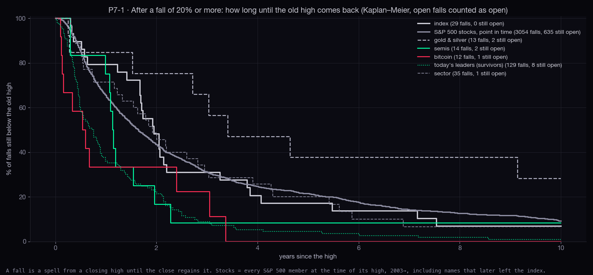
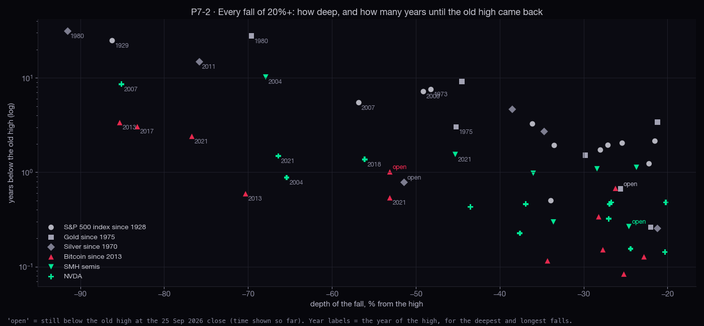
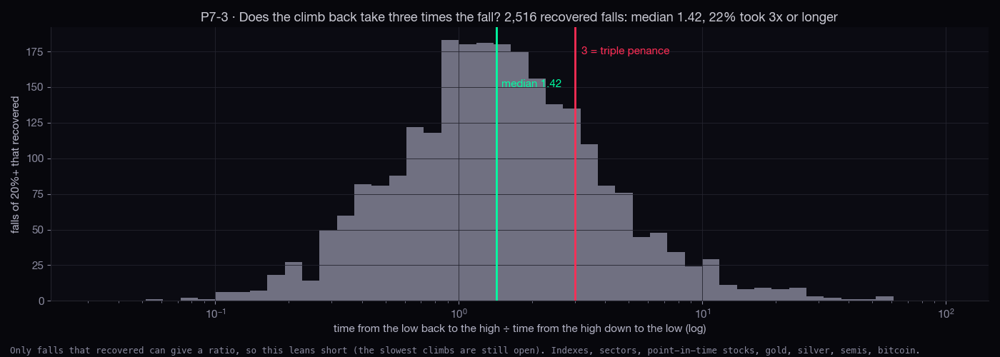
| group | fall | falls | still open | median time to the old high | back in 1 y | back in 2 y | back in 5 y | climb ÷ fall (median) |
|---|---|---|---|---|---|---|---|---|
| index | 20%+ | 29 | 0 | 1.9 y | 21% | 52% | 83% | 1.53 |
| 30%+ | 18 | 0 | 2.2 y | 11% | 33% | 72% | 2.21 | |
| 50%+ | 4 | 0 | 5.5 y | 0% | 0% | 25% | 4.03 | |
| S&P 500 stocks, point in time | 20%+ | 3054 | 635 | 1.6 y | 35% | 57% | 78% | 1.42 |
| 30%+ | 1872 | 555 | 2.9 y | 16% | 35% | 65% | 1.59 | |
| 50%+ | 843 | 389 | 6.7 y | 2% | 7% | 34% | 1.71 | |
| sector | 20%+ | 35 | 1 | 1.9 y | 29% | 54% | 80% | 1.92 |
| 30%+ | 21 | 1 | 3.0 y | 19% | 33% | 67% | 2.89 | |
| 50%+ | 7 | 0 | 5.6 y | 0% | 0% | 29% | 3.05 | |
| fund | 20%+ | 13 | 0 | 1.4 y | 38% | 54% | 92% | 1.31 |
| 30%+ | 6 | 0 | 2.2 y | 17% | 17% | 83% | 1.11 | |
| 50%+ | 2 | 0 | 3.7 y | 0% | 0% | 50% | 2.05 | |
| gold & silver | 20%+ | 13 | 2 | 3.4 y | 15% | 25% | 62% | 0.99 |
| 30%+ | 8 | 1 | 9.1 y | 0% | 0% | 43% | 0.99 | |
| 50%+ | 4 | 1 | 27.7 y | 0% | 0% | 0% | 0.63 | |
| semis | 20%+ | 14 | 2 | 1.1 y | 25% | 83% | 92% | 0.78 |
| 30%+ | 8 | 0 | 1.2 y | 38% | 75% | 88% | 1.28 | |
| 50%+ | 1 | 0 | 10.2 y | 0% | 0% | 0% | 1.10 | |
| bitcoin | 20%+ | 12 | 1 | 0.5 y | 67% | 67% | 100% | 1.24 |
| 30%+ | 7 | 1 | 2.4 y | 43% | 43% | 100% | 1.94 | |
| 50%+ | 6 | 1 | 2.4 y | 33% | 33% | 100% | 1.92 | |
| oil | 20%+ | 5 | 1 | 1.0 y | 20% | 60% | 80% | 1.58 |
| 30%+ | 4 | 1 | 1.0 y | 0% | 50% | 75% | 1.10 | |
| 50%+ | 2 | 1 | 2.4 y | 0% | 0% | 50% | 1.10 | |
| leaders basket | 20%+ | 5 | 0 | 0.6 y | 60% | 60% | 80% | 1.35 |
| 30%+ | 2 | 0 | 2.2 y | 0% | 0% | 50% | 1.34 | |
| today's leaders (survivors) | 20%+ | 129 | 8 | 0.7 y | 64% | 78% | 96% | 1.25 |
| 30%+ | 73 | 5 | 1.4 y | 43% | 63% | 92% | 1.30 | |
| 50%+ | 29 | 1 | 2.5 y | 17% | 34% | 82% | 0.91 |
How many: 1,163 completed doublings in 621 S&P 500 members since 2005, counted by name and by year: the 2010 rebound and the 2022 run-ups are clusters, and the ranges resample whole years. Base rate: from any day, 32% of S&P stocks lost 40% from a high within two years (33% in 2005–14, 32% in 2015–24). After a doubling: 39% (range 32% to 48%), 35% and 44% in the two halves. After a tripling: 50% (range 44% to 59%), clear of the base rate in both halves. But it is not a sell signal on its own: the median stock was still up 10% two years after doubling, and 60% were higher. The median one first climbed another 30%, and the 40% fall usually came from that later high. Only 22% ended up 40% below the day of the doubling. In plain words: a parabolic run raises the chance of a big hole later, mostly by making the next high a higher place to fall from.
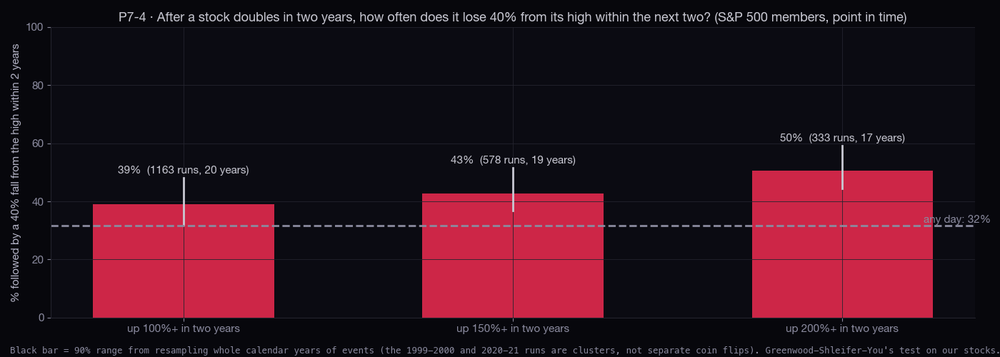
| S&P 500 members, point in time | runs (complete) | names | years | 40% fall from the high within 2 y | 90% range | 2005–14 · 2015–24 | fell 40% below the run day | 2 y later: median · share up | word |
|---|---|---|---|---|---|---|---|---|---|
| up 100%+ in 2 years | 1163 | 621 | 20 | 39% | 32% to 48% | 35% · 44% | 22% | +10% · 60% | LUCK-PROOF |
| up 150%+ in 2 years | 578 | 425 | 19 | 43% | 37% to 52% | 41% · 45% | 24% | +10% · 62% | LUCK-PROOF |
| up 200%+ in 2 years | 333 | 283 | 17 | 50% | 44% to 59% | 48% · 55% | 26% | +6% · 60% | LUCK-PROOF |
Gold is 20% below its 2026-03-01 high. It doubled in two years on 2025-09-12 and is up 62% over two years today. Since 1975 gold has doubled in two years only 3 times. The completed cases (1978 → 40% fall, 1981 → 40% fall) came around the 1980 top, and that high (1980-01-21) was not regained until 2007-11-08. The current case is open. Silver already had its fall: -51% from its 2026-01-26 high after its September 2025 doubling. Gold's three cases and silver's six are far too few for a rate, so each one is listed. The semis (SMH +155% and SOXX +156% over two years), AMD (+304%) and MU (+1091%) are in parabolic territory by this measure today. MU: 5 of its 5 completed past doublings were followed by a 40% fall from the high.
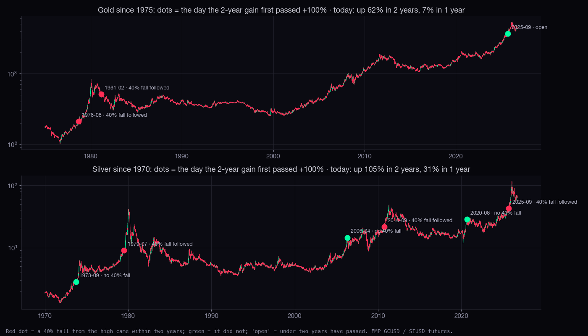
| 2 y change now | 1 y change now | 1 y change, own percentile | any-day chance of a 40% fall in 2 y | every past doubling in 2 years, and what followed | |
|---|---|---|---|---|---|
| Gold since 1975 | +62% | +7% | 54th | 8% | 1978-08 → 40% fall; 1981-02 → 40% fall; 2025-09 open |
| Silver since 1970 | +105% | +31% | 78th | 24% | 1973-09 no 40% fall; 1979-07 → 40% fall; 2006-04 no 40% fall; 2010-09 → 40% fall; 2020-08 no 40% fall; 2025-09 → 40% fall |
| Oil since 2000 | +35% | +59% | 89th | 47% | 2005-03 no 40% fall; 2008-09 → 40% fall; 2010-12 no 40% fall; 2018-01 → 40% fall; 2022-02 → 40% fall |
| Bitcoin since 2013 | +25% | -32% | 19th | 76% | 2014-12 → 40% fall; 2016-11 → 40% fall; 2020-10 → 40% fall; 2024-04 → 40% fall |
| SMH semis | +155% | +89% | 98th | 16% | 2010-11 no 40% fall; 2018-01 no 40% fall; 2020-10 → 40% fall; 2024-05 no 40% fall |
| SOXX semis | +156% | +113% | 97th | 20% | 2017-09 no 40% fall; 2020-10 → 40% fall; 2024-06 → 40% fall |
| NVDA | +94% | +27% | 41st | 57% | 2005-09 → 40% fall; 2010-11 → 40% fall; 2015-11 no 40% fall; 2020-08 → 40% fall; 2023-03 no 40% fall; 2026-03 open |
| AVGO | +106% | +4% | 15th | 22% | 2011-09 no 40% fall; 2014-05 no 40% fall; 2016-09 no 40% fall; 2021-12 no 40% fall; 2024-01 → 40% fall |
| MU | +1091% | +569% | 98th | 83% | 2010-10 → 40% fall; 2013-08 → 40% fall; 2017-08 → 40% fall; 2020-12 → 40% fall; 2024-06 → 40% fall |
| TSM | +159% | +60% | 88th | 17% | 2018-01 no 40% fall; 2020-07 → 40% fall; 2024-06 no 40% fall |
| AMD | +304% | +292% | 97th | 88% | 2005-09 → 40% fall; 2010-10 → 40% fall; 2016-09 no 40% fall; 2019-01 no 40% fall; 2022-02 → 40% fall; 2024-03 → 40% fall; 2026-04 open |
| AAPL | +50% | +35% | 51st | 27% | 2005-09 → 40% fall; 2008-03 → 40% fall; 2010-09 no 40% fall; 2012-10 no 40% fall; 2015-02 no 40% fall; 2018-05 no 40% fall; 2020-06 no 40% fall |
| MSFT | +19% | +1% | 28th | 10% | 2018-06 no 40% fall; 2020-06 no 40% fall |
| AMZN | +30% | +13% | 39th | 32% | 2007-06 → 40% fall; 2010-03 no 40% fall; 2012-06 no 40% fall; 2016-04 no 40% fall; 2018-10 no 40% fall; 2020-10 → 40% fall; 2024-11 open |
| GOOGL | +110% | +39% | 74th | 14% | 2021-04 → 40% fall; 2024-11 open |
| META | +34% | -1% | 14th | 14% | 2024-06 no 40% fall |
| TSLA | +56% | -16% | 12th | 64% | 2013-04 no 40% fall; 2015-07 → 40% fall; 2018-02 → 40% fall; 2020-03 → 40% fall; 2022-09 → 40% fall; 2024-11 → 40% fall |
| MSTR | +10% | -51% | 8th | 68% | 2006-03 → 40% fall; 2010-10 → 40% fall; 2014-11 no 40% fall; 2020-11 → 40% fall; 2024-02 → 40% fall |
STOLEN FROM
Zweig breadth thrust (Winning on Wall Street, 1986) — StockCharts definition · IslamBaraka90, cumulative advance–decline line without look-ahead
The question. Our breadth file only starts on 23 Sep 2026. Rebuilt from 22 years of daily bars, does a breadth thrust (the market going from few names rising to most names rising in a few sessions) predict what the S&P does next? False alarms are counted.
What we rebuilt. For every session from 2004-09-01 to 2026-09-25: advances and declines, % above the 50-day and 200-day, new 52-week highs and lows. This was done three ways: (1) the S&P 500 as it actually was each day (950 names ever, about 498 measured on a median day, including names later removed), which is the main one; (2) the 364 names the Hub serves today, which carries survivorship bias and is shown so the bias is visible; (3) the USUAL DAY table (public.sigma_day_counts, 5,776 days from 2003-10-10), which counts names having an unusually big day up or down. The search: Zweig's rule at 12 thresholds and windows, the %-above-50-day thrust at 8, and a USUAL DAY up-thrust at 3. That is 23 rules × 3 holding periods = 69 tests, all counted. A rule's signal counts once per 60 sessions.
Base rate: from any day since 2004, the S&P's median change over the next 126 sessions (about six months) was +6.1%, higher 76% of the time. Classic Zweig (0.40 → 0.615 within 10 sessions, on S&P 500 members): 20 signals in 13 different years, median +7.5% over the next 126 sessions (90% range 4.0% to 17.8%), 8 of them below the any-day median. By halves: +8.9% against +5.5% in 2004–14, and +6.2% against +6.9% since 2015. The whole family: Hansen's SPA p = 0.56, with no rule in the Romano–Wolf survivor set. After a false-discovery correction every rule's p is above 0.48. The served universe gives the same answer (p = 0.30).
In plain words: a thrust marks the end of a washout. It has been a fine day to be long, but not measurably better than a random day. Two cautions: our Zweig fires about 20 times in 22 years, far more often than the NYSE original, because 500 large companies move together more than 3,000 NYSE issues do. And the sharpest version (0.40 → 0.65 in 10 sessions) has too few signals to be a rate. Today (25 Sep): 26.4% of members above the 50-day (11th percentile), 46.1% above the 200-day, Zweig's 10-day ratio 0.46 (22nd percentile). This is neither a washout nor a thrust. The last classic Zweig signal was 2023-11-03, and the last 40→60 thrust above the 50-day was 2026-04-20.
Survivorship, measured: today's 364 names read +3.2 points healthier on "% above the 200-day" in the past than the index as it really was (chart P10-4). That bias is why the point-in-time list is the one used for decisions.
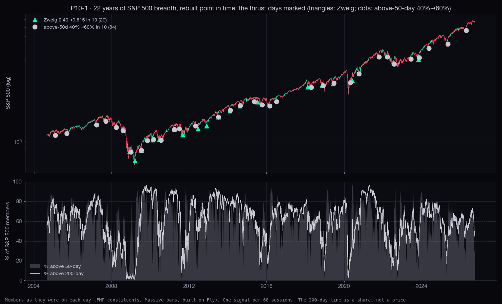
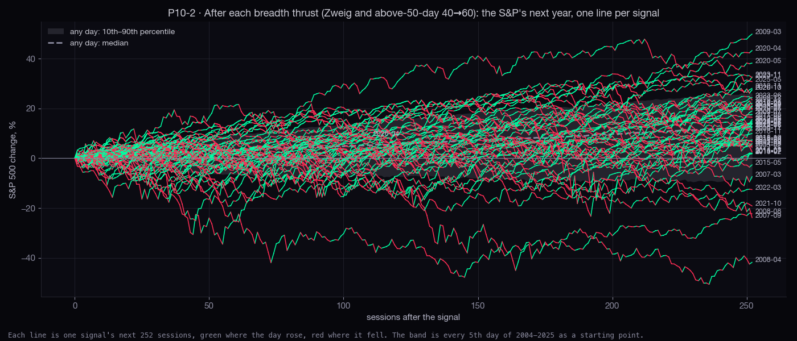
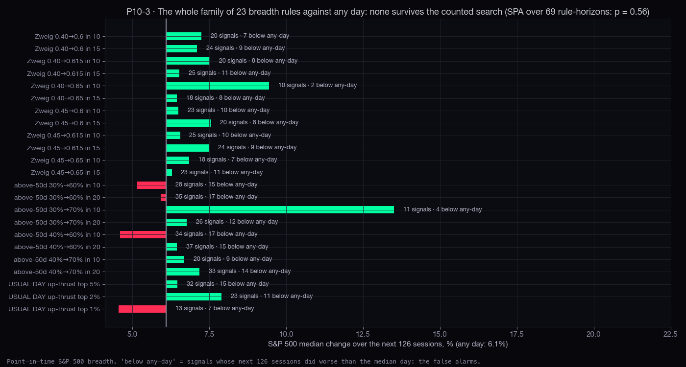
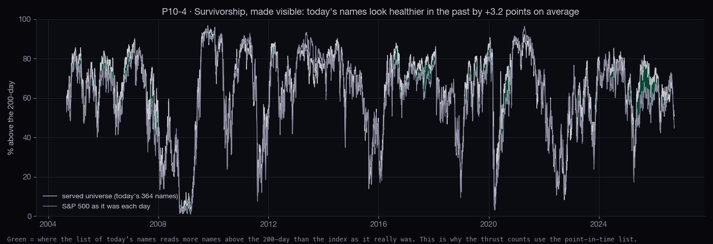
| rule | signals | years | median next 126 | 90% range (resampled by year) | median next 252 | worse than any day | p · after correction | word |
|---|---|---|---|---|---|---|---|---|
| Zweig 0.40→0.6 in 10 | 20 | 15 | +7.2% | 4.6% to 12.2% | +15.0% | 7 | 0.12 · 0.48 | NOT SHOWN |
| Zweig 0.40→0.6 in 15 | 24 | 17 | +7.1% | 4.6% to 11.4% | +13.1% | 9 | 0.12 · 0.48 | NOT SHOWN |
| Zweig 0.40→0.615 in 10 | 20 | 13 | +7.5% | 4.0% to 17.8% | +17.0% | 8 | 0.20 · 0.48 | NOT SHOWN |
| Zweig 0.40→0.615 in 15 | 25 | 17 | +6.5% | 4.0% to 12.9% | +14.7% | 11 | 0.31 · 0.53 | NOT SHOWN |
| Zweig 0.40→0.65 in 10 | 10 | 8 | +9.4% | 6.3% to 18.8% | +11.6% | 2 | 0.04 · 0.48 | A LIST |
| Zweig 0.40→0.65 in 15 | 18 | 14 | +6.4% | 4.4% to 15.8% | +13.7% | 8 | 0.36 · 0.53 | A LIST |
| Zweig 0.45→0.6 in 10 | 23 | 17 | +6.5% | 4.0% to 8.0% | +13.5% | 10 | 0.25 · 0.48 | NOT SHOWN |
| Zweig 0.45→0.6 in 15 | 20 | 15 | +7.5% | 4.0% to 8.9% | +9.1% | 8 | 0.21 · 0.48 | NOT SHOWN |
| Zweig 0.45→0.615 in 10 | 25 | 17 | +6.5% | 5.8% to 8.7% | +14.9% | 10 | 0.13 · 0.48 | NOT SHOWN |
| Zweig 0.45→0.615 in 15 | 24 | 18 | +7.5% | 4.6% to 9.6% | +12.5% | 9 | 0.10 · 0.48 | NOT SHOWN |
| Zweig 0.45→0.65 in 10 | 18 | 15 | +6.8% | 4.4% to 9.1% | +13.4% | 7 | 0.20 · 0.48 | A LIST |
| Zweig 0.45→0.65 in 15 | 23 | 18 | +6.3% | 1.4% to 7.2% | +13.6% | 11 | 0.46 · 0.57 | NOT SHOWN |
| above-50d 30%→60% in 10 | 28 | 17 | +5.2% | -1.2% to 6.9% | +11.9% | 15 | 0.70 · 0.70 | NOT SHOWN |
| above-50d 30%→60% in 20 | 35 | 20 | +5.9% | 1.9% to 9.4% | +13.7% | 17 | 0.52 · 0.59 | NOT SHOWN |
| above-50d 30%→70% in 10 | 11 | 7 | +13.5% | 1.8% to 19.8% | +13.5% | 4 | 0.21 · 0.48 | A LIST |
| above-50d 30%→70% in 20 | 26 | 15 | +6.8% | 4.5% to 13.5% | +13.9% | 12 | 0.36 · 0.53 | NOT SHOWN |
| above-50d 40%→60% in 10 | 34 | 20 | +4.6% | 0.9% to 7.0% | +11.6% | 17 | 0.60 · 0.62 | NOT SHOWN |
| above-50d 40%→60% in 20 | 37 | 22 | +6.4% | 2.3% to 9.4% | +13.6% | 15 | 0.23 · 0.48 | NOT SHOWN |
| above-50d 40%→70% in 10 | 20 | 14 | +6.7% | -0.1% to 13.5% | +13.7% | 9 | 0.36 · 0.53 | NOT SHOWN |
| above-50d 40%→70% in 20 | 33 | 19 | +7.2% | 1.7% to 9.7% | +13.5% | 14 | 0.23 · 0.48 | NOT SHOWN |
| USUAL DAY up-thrust top 5% | 32 | 22 | +6.5% | 3.6% to 7.9% | +12.8% | 15 | 0.47 · 0.57 | NOT SHOWN |
| USUAL DAY up-thrust top 2% | 23 | 19 | +7.9% | 3.6% to 10.5% | +13.4% | 11 | 0.44 · 0.57 | NOT SHOWN |
| USUAL DAY up-thrust top 1% | 13 | 12 | +4.5% | 0.7% to 11.8% | +14.5% | 7 | 0.57 · 0.62 | A LIST |
| signal day | 20 later | 63 later | 126 later | 252 later | worst fall in next 63 |
|---|---|---|---|---|---|
| 2008-12-08 | -0.3% | -20.7% | +3.2% | +20.0% | -25.6% |
| 2009-03-17 | +9.5% | +17.2% | +35.3% | +49.9% | -1.2% |
| 2009-07-15 | +7.8% | +15.1% | +22.8% | +17.6% | 0.0% |
| 2010-02-18 | +5.3% | +0.7% | -1.1% | +20.7% | -1.1% |
| 2010-06-15 | -1.8% | +0.5% | +11.2% | +15.5% | -8.3% |
| 2011-03-30 | +2.4% | -1.6% | -13.3% | +5.6% | -4.7% |
| 2011-08-29 | -2.9% | -1.4% | +12.9% | +16.5% | -9.2% |
| 2012-06-15 | +0.8% | +9.2% | +6.5% | +21.3% | -2.2% |
| 2012-11-23 | +1.5% | +6.2% | +17.8% | +28.1% | -0.7% |
| 2013-07-08 | +4.1% | +3.1% | +11.4% | +19.7% | -0.6% |
| 2014-02-11 | +2.7% | +4.3% | +6.3% | +13.7% | -0.2% |
| 2014-08-19 | +1.0% | +3.0% | +5.8% | +4.9% | -6.0% |
| 2015-07-14 | -1.2% | -4.3% | -8.1% | +2.1% | -11.4% |
| 2018-02-15 | +0.8% | -0.4% | +4.0% | +1.8% | -5.5% |
| 2018-11-07 | -6.4% | -3.7% | -0.1% | +9.9% | -16.4% |
| 2019-06-07 | +3.6% | +3.7% | +8.5% | +12.5% | -1.1% |
| 2020-05-27 | +0.5% | +13.4% | +17.8% | +38.2% | -1.1% |
| 2020-10-05 | -2.9% | +9.3% | +19.7% | +27.5% | -4.1% |
| 2022-07-28 | +3.1% | -5.9% | -0.0% | +12.7% | -12.2% |
| 2023-11-03 | +4.9% | +13.7% | +19.0% | +32.7% | -0.3% |
Every rule tried in this round is in the count, following the statistician's method standard (R5: count the tests; SPA / Reality Check whenever rules are searched). Words: luck-proof = the range clears the any-day line after the search is counted, in both halves of history. Leaning = same direction in both halves, but the range still touches the line. A list = fewer than 20 independent cases, shown one by one with no rate claimed. Not shown = no better than any day.
| study | rules searched | tests | the corrected test | word |
|---|---|---|---|---|
| P4 volatility sizing | 28 × 13 | 364 | SPA vs same exposure: min p 0.69 | LEANING (Sharpe); drawdown cut is mechanical |
| P5 trend rule | 10 × 34 | 340 | SPA vs holding: min p 0.53; 2 of 26 under 10% vs same share (luck: 2.6) | NOT SHOWN as a return edge; drawdown cut measured |
| P7 run-ups → 40% fall | 3 thresholds | 3 | tripling: range 44% to 59% vs base 32%, both halves | LUCK-PROOF (tripling) · LEANING (doubling) |
| P10 breadth thrusts | 23 rules × 3 holds | 69 | SPA p 0.56; StepM survivors: none | NOT SHOWN |
| CALM / STRESS | the published 2-state model, no new search | 0 | next-20 swings: +9.7 pts (range +7.3 to +12.4) | LUCK-PROOF for swings · NOT SHOWN for direction |
Four studies proposed by the research director (N3) and run on our own data, each with the public work it copies, the base rate, a range for how sure it is, and one word. It also gives a one-page reading of today's market state with what it means for position size. It is research, not advice: nothing here is a buy or sell call.
https://scintilla-massive-chart-api.fly.dev/candles?tf=D): Massive for funds and stocks (split-adjusted, no dividends), FMP for the VIX, gold (GCUSD), silver (SIUSD), oil (CLUSD) and bitcoin. Long index histories (^GSPC 1927→, ^NDX, ^RUT, ^DJI) are the FMP pulls the RSI lane cached.stats-cache/point-in-time/v1, built today on Fly: FMP historical constituents, FMP monthly market caps, and Massive daily bars for 950 names that were ever members. The LEADERS10 basket is the ten largest members by market cap at each prior year-end, equal weight, reset each January.public.sigma_day_counts, from the committed dump at research/statistics/data/pullback-playbook-20260928/sigma_day_counts.json (read only).data/today-bars.json:| symbol | provider | served from | last bar | close | fetched (UTC) |
|---|---|---|---|---|---|
| VIX | FMP | fmp_macro_full | 2026-09-28 | 16.1 | 2026-09-28T20:09 |
| SPY | MASSIVE | TAIL | 2026-09-28 | 765.56 | 2026-09-28T20:09 |
| QQQ | MASSIVE | TAIL | 2026-09-28 | 736.53 | 2026-09-28T20:09 |
| series | file | bars | from | to | sha256 (12) |
|---|---|---|---|---|---|
| AAPL | ~/Library/Application Support/scintilla/stats-cache/candles-f5/AAPL.json | 5797 | 2003-09-11 | 2026-09-25 | a860bc88e886 |
| AMD | ~/Library/Application Support/scintilla/stats-cache/candles-f5/AMD.json | 5797 | 2003-09-11 | 2026-09-25 | 355fe80f6389 |
| AMZN | ~/Library/Application Support/scintilla/stats-cache/candles-f5/AMZN.json | 5797 | 2003-09-11 | 2026-09-25 | 0f95834b91db |
| AVGO | ~/Library/Application Support/scintilla/stats-cache/candles-f5/AVGO.json | 4311 | 2009-08-06 | 2026-09-25 | 7ab223e4f87b |
| BTCUSD | ~/Library/Application Support/scintilla/stats-cache/daily-bars-rsi/BTCUSD.json hole of 54 days before 2010-04-25; earlier bars not used | 5955 | 2010-04-25 | 2026-09-27 | f52928dc276e |
| CLUSD | ~/Library/Application Support/scintilla/stats-cache/daily-bars-rsi/CLUSD.json | 6609 | 2000-08-23 | 2026-09-25 | b208746cbbb6 |
| DIA | ~/Library/Application Support/scintilla/stats-cache/daily-bars-rsi/DIA.json | 5797 | 2003-09-11 | 2026-09-25 | 1d8a234e5743 |
| GCUSD | ~/Library/Application Support/scintilla/stats-cache/daily-bars-rsi/GCUSD.json | 13166 | 1975-01-02 | 2026-09-25 | 47596123dad5 |
| GOOGL | ~/Library/Application Support/scintilla/stats-cache/candles-f5/GOOGL.json | 3139 | 2014-04-03 | 2026-09-25 | a3d319fe0a02 |
| IWM | ~/Library/Application Support/scintilla/stats-cache/daily-bars-rsi/IWM.json | 5797 | 2003-09-11 | 2026-09-25 | 56b7c405b630 |
| LEADERS10 (PIT basket) | ~/Library/Application Support/scintilla/stats-cache/point-in-time/v1/pit-leaders-basket.json | 4964 | 2007-01-03 | 2026-09-25 | f9d7d2f093f0 |
| META | ~/Library/Application Support/scintilla/stats-cache/candles-f5/META.json hole of 132 days before 2022-06-09; earlier bars not used | 1078 | 2022-06-09 | 2026-09-25 | 577a90e16142 |
| MSFT | ~/Library/Application Support/scintilla/stats-cache/candles-f5/MSFT.json | 5797 | 2003-09-11 | 2026-09-25 | 48273b8881bd |
| MSTR | ~/Library/Application Support/scintilla/stats-cache/candles-f5/MSTR.json | 5797 | 2003-09-11 | 2026-09-25 | 2b6e804f0aa7 |
| MU | ~/Library/Application Support/scintilla/stats-cache/candles-f5/MU.json | 5797 | 2003-09-11 | 2026-09-25 | 0990e6fcd7c5 |
| NVDA | ~/Library/Application Support/scintilla/stats-cache/candles-f5/NVDA.json | 5797 | 2003-09-11 | 2026-09-25 | 00bfc839025f |
| QQQ | ~/Library/Application Support/scintilla/stats-cache/daily-bars-rsi/QQQ.json hole of 2304 days before 2011-03-23; earlier bars not used | 3901 | 2011-03-23 | 2026-09-25 | 73b6aba4b990 |
| S&P 500 point-in-time panel | ~/Library/Application Support/scintilla/stats-cache/point-in-time/v1/daily/*.json | 5971 | 2003-01-02 | 2026-09-25 | 5c7ff7fe2b48 (manifest) |
| SIUSD | ~/Library/Application Support/scintilla/stats-cache/daily-bars-rsi/SIUSD.json | 14403 | 1970-01-05 | 2026-09-25 | d02859f6b0e4 |
| SMH | ~/Library/Application Support/scintilla/stats-cache/candles-f5/SMH.json | 5797 | 2003-09-11 | 2026-09-25 | 5ad5d4fcfc18 |
| SOXX | ~/Library/Application Support/scintilla/stats-cache/candles-f5/SOXX.json | 4010 | 2010-10-15 | 2026-09-25 | 15739b9684cb |
| SPY | ~/Library/Application Support/scintilla/stats-cache/daily-bars-rsi/SPY.json | 5797 | 2003-09-11 | 2026-09-25 | 0b05fe36c6d8 |
| TLT | ~/Library/Application Support/scintilla/stats-cache/daily-bars-rsi/TLT.json | 5797 | 2003-09-11 | 2026-09-25 | 46aa5b92a38a |
| TSLA | ~/Library/Application Support/scintilla/stats-cache/candles-f5/TSLA.json | 4086 | 2010-06-29 | 2026-09-25 | 1ead31a0521f |
| TSM | ~/Library/Application Support/scintilla/stats-cache/candles-f5/TSM.json | 5797 | 2003-09-11 | 2026-09-25 | 493eeffb8a6b |
| VIX | ~/Library/Application Support/scintilla/stats-cache/daily-bars-rsi/VIX.json | 9274 | 1990-01-02 | 2026-09-25 | c1c0efc4f1a7 |
| XLB | ~/Library/Application Support/scintilla/stats-cache/sector-rotation-20260928/XLB.json | 5797 | 2003-09-11 | 2026-09-25 | 18df7f8cff5c |
| XLC | ~/Library/Application Support/scintilla/stats-cache/sector-rotation-20260928/XLC.json | 2079 | 2018-06-19 | 2026-09-25 | 330552cb66e8 |
| XLE | ~/Library/Application Support/scintilla/stats-cache/sector-rotation-20260928/XLE.json | 5797 | 2003-09-11 | 2026-09-25 | f1c5277ac24f |
| XLF | ~/Library/Application Support/scintilla/stats-cache/sector-rotation-20260928/XLF.json | 5797 | 2003-09-11 | 2026-09-25 | f0cefb8a5fec |
| XLI | ~/Library/Application Support/scintilla/stats-cache/sector-rotation-20260928/XLI.json | 5797 | 2003-09-11 | 2026-09-25 | 43dcdac1fc40 |
| XLK | ~/Library/Application Support/scintilla/stats-cache/sector-rotation-20260928/XLK.json | 5797 | 2003-09-11 | 2026-09-25 | fc68efd85965 |
| XLP | ~/Library/Application Support/scintilla/stats-cache/sector-rotation-20260928/XLP.json | 5797 | 2003-09-11 | 2026-09-25 | 1010c3fdbce8 |
| XLRE | ~/Library/Application Support/scintilla/stats-cache/sector-rotation-20260928/XLRE.json | 2750 | 2015-10-08 | 2026-09-25 | 0e1fbe4ed736 |
| XLU | ~/Library/Application Support/scintilla/stats-cache/sector-rotation-20260928/XLU.json | 5797 | 2003-09-11 | 2026-09-25 | 7e6a8d4c4f62 |
| XLV | ~/Library/Application Support/scintilla/stats-cache/sector-rotation-20260928/XLV.json | 5797 | 2003-09-11 | 2026-09-25 | 4d9c7d6f4ad8 |
| XLY | ~/Library/Application Support/scintilla/stats-cache/sector-rotation-20260928/XLY.json | 5797 | 2003-09-11 | 2026-09-25 | ea8754ece982 |
| ^DJI | ~/Library/Application Support/scintilla/stats-cache/daily-bars-rsi/fmp-indexes.json | 10495 | 1985-01-29 | 2026-09-25 | 56de4357962d |
| ^GSPC | ~/Library/Application Support/scintilla/stats-cache/daily-bars-rsi/fmp-indexes.json | 24801 | 1927-12-30 | 2026-09-25 | 56de4357962d |
| ^NDX | ~/Library/Application Support/scintilla/stats-cache/daily-bars-rsi/fmp-indexes.json | 10493 | 1985-01-31 | 2026-09-25 | 56de4357962d |
| ^RUT | ~/Library/Application Support/scintilla/stats-cache/daily-bars-rsi/fmp-indexes.json | 9836 | 1987-09-10 | 2026-09-25 | 56de4357962d |
| public.sigma_day_counts (USUAL DAY dump) | research/statistics/data/pullback-playbook-20260928/sigma_day_counts.json | 5777 | 2003-10-09 | 2026-09-25 | ca5c563e996f |
| served universe (candles-f5) | ~/Library/Application Support/scintilla/stats-cache/candles-f5/*.json | 5797 | 2003-09-11 | 2026-09-25 | per-file |